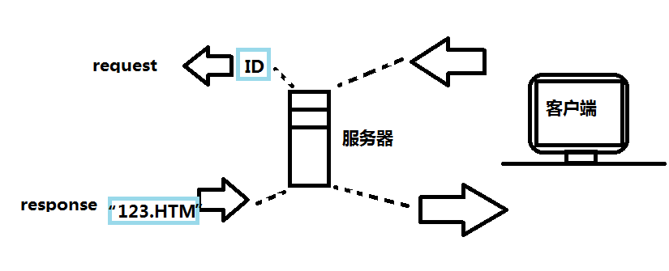

该对象用于检索从浏览器向服务器所发送的请求中的信息。在按下“提交”按钮时，Request对象将读取和提取通过HTTP请求发送的参数。在用户提交表单时，包含在输入控件中的数据将与表单一起被发送。
当向服务器提交数据时，分为两种方式：
//get
string userName = Request.QueryString["txtUserName"].ToString();
string userPwd = Request.QueryString["txtUserPwd"].ToString();
Response.Write("登录的用户名为" + "userName ");
//post
string userName = Request["txtUserName"].ToString();
string userPwd = Request["txtUserPwd"].ToString();
string userName = Request.Form.Get("txtUserName").ToString();
string userPwd = Request.Form.Get("txtUserPwd").ToString();
1，Get将表单中数据的按照variable=value的形式，添加到action所指向的URL后面，并且两者使用“?”连接，而各个变量之间使用“&”连接；Post是将表单中的数据放在form的数据体中，按照变量和值相对应的方式，传递到action所指向URL。
比如你有一个页面index.html，这个页面有一个文本域,名称是：a，值是123，你用get提交后，你的url会变成：index.html?a=123，在获取的时候，就是从浏览器中回去参数了，而不是表单！
2，Get是不安全的，因为在传输过程，数据被放在请求的URL中，而如今现有的很多服务器、代理服务器或者用户代理都会将请求URL记录到日志文件中，然后放在某个地方，这样就可能会有一些隐私的信息被第三方看到。另外，用户也可以在浏览器上直接看到提交的数据，一些系统内部消息将会一同显示在用户面前。Post的所有操作对用户来说都是不可见的。
3，Get传输的数据量小，这主要是因为受URL长度限制；而Post可以传输大量的数据，所以在上传文件只能使用Post。
4，Get是Form的默认方法。
主要用于服务器端向客户端发送数据，其中可以利用Response.Write直接向客户发送信息，也可以利用response.Redirect进行重新定位客户端到另一个URL上去，当然也可以利用Response.Cookies来设置Cookies的值。
Response和Request区别：

此对象用于共享应用程序级信息。即，维护整个应用程序的一组变量，这些变量可以由所有访问该应用程序的用户共享。
使用Application对象来使整个ASP应用程序的所有用户共享数据，把一个ASP程序中的不同用户、不同页面联系在一起
该对象用于存储在多个页面调用之间特定用户的信息。存储访问者的用户信息，多个页面可以访问该信息，但是两个访问者之间不能共享该信息。
每个用户以这台web服务器建立连接时，他就创建链接，并与这个服务器建立了一个session，并且服务器就自动为其分配一个sessionID，用以识别这个用户的唯一身份。特别说明的是Session对象的变量只是对一个用户有效，不同的用户的会话信息用不同的Session对象的变量存储。在网络环境下Session对象的变量是有生命周期的，如果在规定的时间没有对Session对象的变量刷新，系统会终止这些变量。
该对象用于访问服务器上的资源。来获取你现在请求的那个服务器中的一些信息。例如：访问服务器上创建和安装的组件。
//单击加载，上传服务器
protected void btnLoad_Click(object sender, EventArgs e)
{
this.FileUpload1.PostedFile.SaveAs(Server.MapPath("upFile") + "\\1.jpg");
this.Image1.ImageUrl = Server.MapPath("upFile") + "\\1.jpg";
}
在Web程序设计中，它表示一个长度不超过4K的一个普通的文本文件。这个文件在用户的硬盘上，可以由Web浏览器进行访问。由WEB服务器嵌入用户浏览器中，以便标识用户，且随同每次用户请求发往WEB服务器。这样可以让服务器识别是哪个用户。
用来存储事件信息和由应用程序全局使用的对象。global.asa是ASP的一个全局应用文件.主要是定义Session对象和Application对象,以及相应的事件.
Session对象和Application对象都有两个事件,要使用他们的事件,就必须首先在Global.asa文件文件中声明,该文件对于用户来说是不可见的,文件名也是固定的,并且该文件还必须放在应用程序的根目录下,每个应用程序只能拥有一个Global.asa文件.
举例：查看在线人数，在global.asa中编写
public class Global : HttpApplication
{
void Application_Start(object sender, EventArgs e)
{
// 在应用程序启动时运行的代码
BundleConfig.RegisterBundles(BundleTable.Bundles);
AuthConfig.RegisterOpenAuth();
Application.Add("count", 0);
Application["online"] = 0;
}
void Application_End(object sender, EventArgs e)
{
// 在应用程序关闭时运行的代码
}
void Application_Error(object sender, EventArgs e)
{
// 在出现未处理的错误时运行的代码
}
void Session_Start(object sender, EventArgs e)
{
Session.Timeout = 1;
Application.Lock();
Application["count"] = (int)Application["count"] + 1;
Application["online"] = (int) Application["online"] +1;
Application.UnLock();
}
void Session_End(object sender, EventArgs e)
{
Application.Lock();
Application["online"] = (int)Application["online"] - 1;
Application.UnLock();
}
}
在web应用程序中编写：
protected void Page_Load(object sender, EventArgs e)
{
Response.Write(Application["count"].ToString());
}以上这些对象提供了相当多的功能，但是不同的对象的应用场合不同，这需要我们加深理解，在以后的实践中应用。